Manual do Administrador
Guia completo para gerir a equipa, presenças, turnos, pagamentos e pedidos na RHNeto Pro.
Como entrar
Acede ao painel de administração com o teu nome de utilizador (ou email) e palavra-passe.
- Abre o link do painel de administração no navegador.
- Introduz o teu nome de utilizador ou email.
- Introduz a tua palavra-passe.
- Clica em "Entrar".
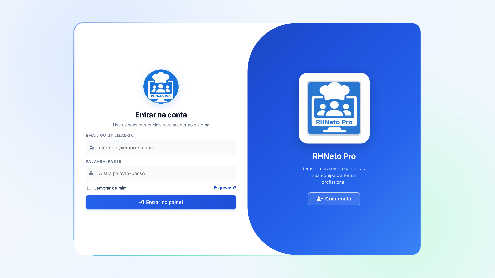
login.png a esta pasta.Início
O painel principal dá-te uma visão geral instantânea da equipa: quem está presente, quem falta, custos e o que precisa da tua atenção hoje.
- Os cartões no topo mostram: total de funcionários, presentes hoje, faltas hoje e custos salariais do mês.
- O bloco de Pendências (quando existir) avisa-te de justificativas por aprovar ou registos de ponto por confirmar — clica para ires diretamente rever.
- O gráfico mostra a tendência de presenças vs. faltas dos últimos 7 dias.
- Em baixo, a Atividade Recente lista os últimos eventos da equipa (entradas, faltas, novos funcionários, etc.), com paginação.
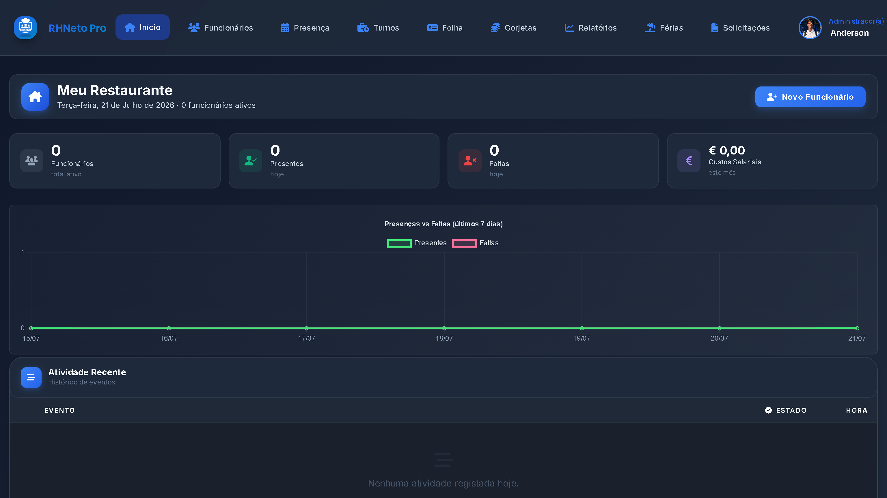
inicio.png a esta pasta.Funcionários
Gere toda a tua equipa: adicionar, editar, consultar e ativar/desativar funcionários.
- Usa os filtros rápidos (Todos / Ativos / Inativos / Férias) ou a barra de pesquisa para encontrar um funcionário.
- Clica em "Novo Funcionário" para adicionar alguém à equipa (nome, cargo, departamento, contrato, PIN de acesso ao portal, etc.).
- Em cada linha, usa os botões de ação: Ver detalhes (👁), Editar (✏️) e Ativar/Desativar (✓/✕).
- Seleciona várias linhas com as caixas de verificação para usar as ações em massa: mudar estado, mudar departamento, exportar ou notificar por SMS.
- Desativar um funcionário preserva todo o histórico — não apaga dados, só bloqueia o acesso e marca como inativo.
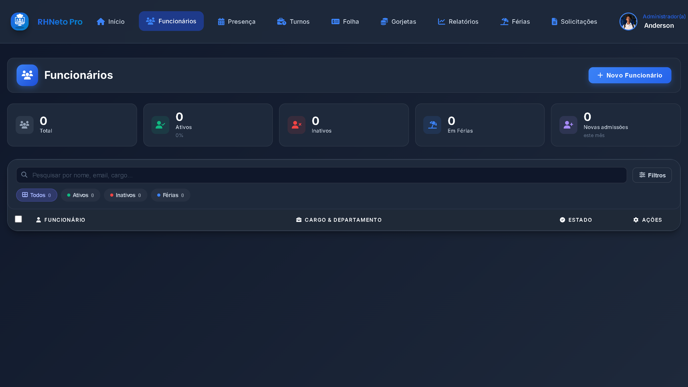
funcionarios.png a esta pasta.Presença
Consulta e confirma o histórico de presenças de toda a equipa, dia a dia.
- Pesquisa por nome de funcionário ou filtra por período de datas.
- Cada linha mostra a entrada, saída e o estado do dia: presente, atrasado, falta justificada ou falta injustificada.
- Clica em "Ver detalhes" para veres o roteiro completo do dia (entrada, pausas, saída).
- Usa "Editar registo" para corrigir um ponto (por exemplo, se o funcionário se esqueceu de marcar a saída).
- Confirma os registos de ponto pendentes para que fiquem validados no histórico oficial.
- Exporta o histórico para CSV/Excel sempre que precisares de um relatório externo.
- Se tiveres configurado a localização do estabelecimento (em Definições), cada registo mostra também um pequeno indicador: 📍 No local (verde) ou 📍 Fora do local (âmbar, com a distância em metros) — nunca bloqueia a marcação, é só um sinal para revisares.
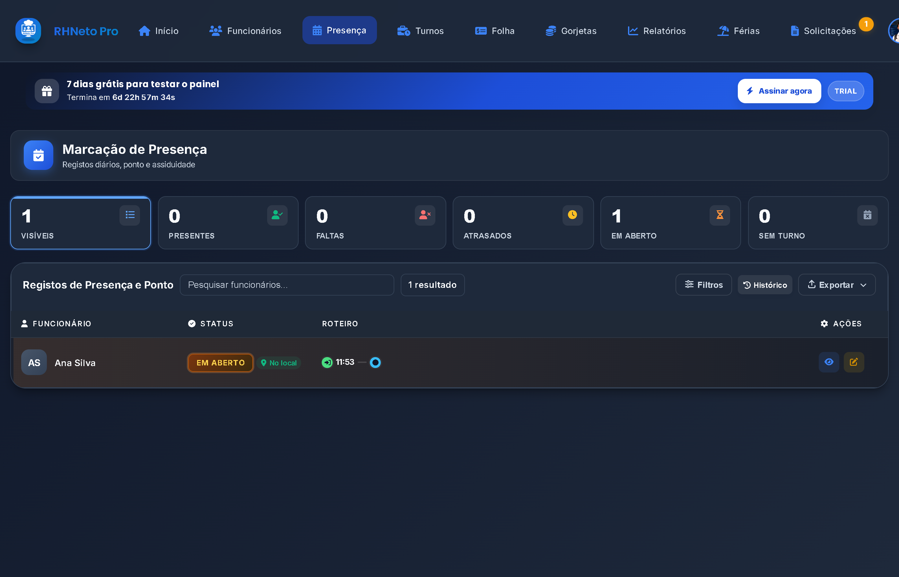
assiduidade.png a esta pasta.Turnos
Cria e organiza os horários de trabalho da equipa, em vista de tabela, semana ou mês.
- Clica em "Novo Turno" para atribuir um horário a um funcionário (dias da semana, hora de início/fim, vigência).
- Usa "Turnos em Grupo" para criar o mesmo turno para vários funcionários de uma vez.
- Alterna entre as vistas de Tabela, Semana e Mês com os botões no canto superior direito.
- Aprova ou rejeita pedidos de troca de turno entre funcionários.
- Usa "Publicar" para oficializar os turnos de um período, ou "Fechar"/"Reabrir" para bloquear/desbloquear edições nesse intervalo.
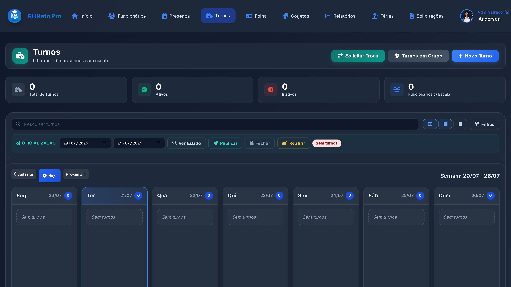
turnos.png a esta pasta.Folha de Pagamento
Consulta e processa o pagamento mensal de cada funcionário.
- Seleciona o mês/ano que queres consultar.
- Clica em "Ver Recibo" (👁) para veres o detalhe do vencimento de um funcionário.
- Usa "Editar" (✏️) para ajustar variáveis do mês (horas extra, bónus, subsídios).
- Marca um pagamento como "Pago" (✓) quando for efetuado, individualmente ou em massa com "Marcar Pagos".
- No final do mês, usa "Fechar" para guardar um snapshot imutável dos valores — só é possível "Reabrir" depois se precisares de corrigir algo.
- Exporta a folha em CSV sempre que precisares.
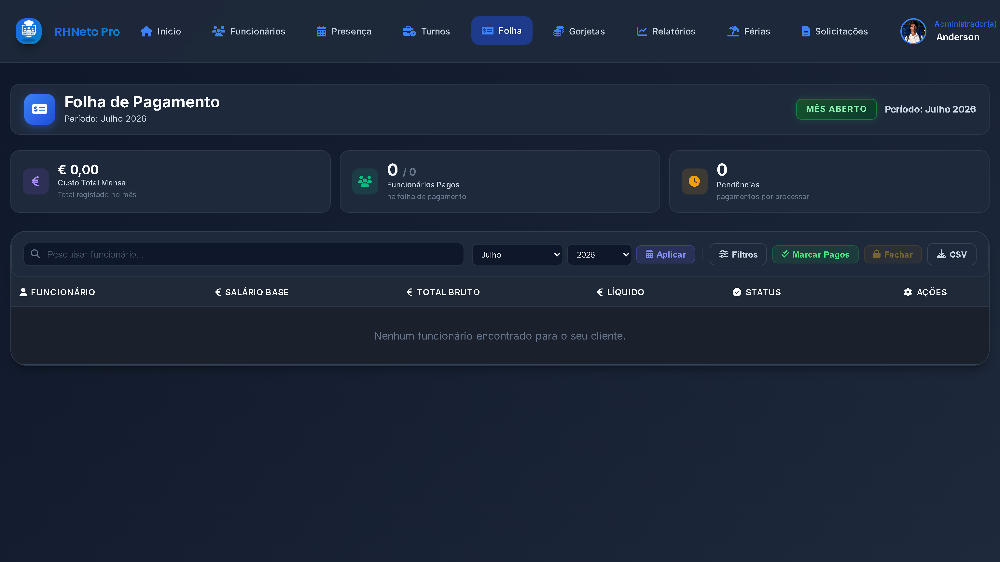
folha.png a esta pasta.Gorjetas
Consulta e valida as gorjetas registadas pelos funcionários.
- Vê todas as gorjetas registadas, por funcionário, data e valor.
- Clica em "Ver" para consultar o detalhe de uma gorjeta.
- Usa "Editar" para corrigir o valor ou a forma de pagamento, se necessário.
- Gorjetas pendentes de validação também aparecem na secção Solicitações, prontas a aprovar ou rejeitar.
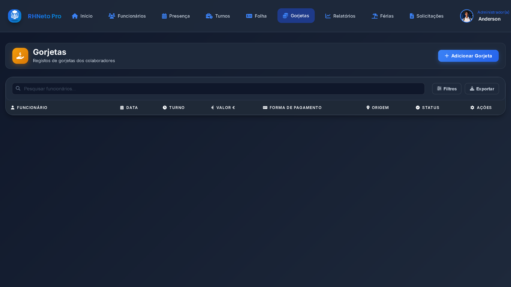
gorjetas.png a esta pasta.Relatórios
Consulta relatórios detalhados de desempenho e custos por funcionário.
- Vê a tabela geral com horas trabalhadas, dias trabalhados, faltas, salário base, gorjetas e total líquido de cada funcionário.
- Clica em "Ver" (👁) num funcionário para abrir o relatório detalhado: KPIs de presença, resumo financeiro, saldo de férias e últimos registos.
- A partir do relatório detalhado, usa "Baixar PDF" para exportares um documento pronto a imprimir ou partilhar.
- Usa "Exportar" na tabela geral para retirares os dados de todos os funcionários de uma vez.
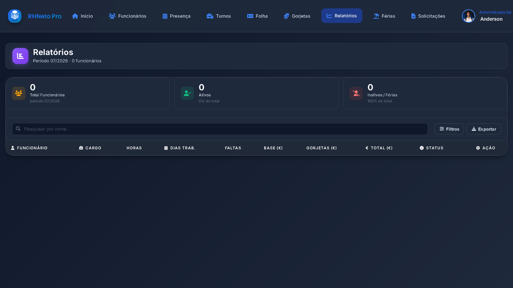
relatorios.png a esta pasta.Férias
Consulta e gere os períodos de férias já aprovados da equipa (agendados, em curso, concluídos, rejeitados ou cancelados).
- Usa os separadores (Agendadas / Em curso / Concluídas / Rejeitadas) para filtrar a lista.
- Clica em "Nova Marcação" para criares férias diretamente para um funcionário.
- Uma férias agendada (ainda não começou) pode ser editada ou cancelada livremente.
- Uma férias em curso pode ser cancelada: se for o primeiro dia, cancela por completo; se já tiver começado há mais tempo, os dias já gozados ficam registados e o resto volta ao saldo do funcionário.
- Pedidos de férias ainda pendentes (por aprovar) não aparecem aqui — são geridos na secção Solicitações.
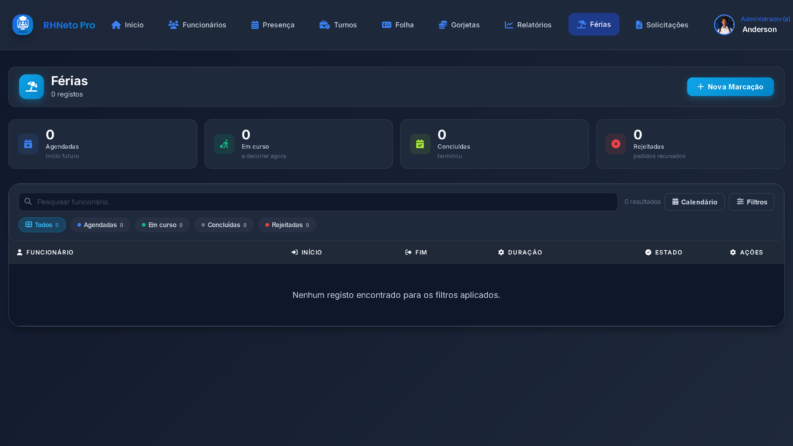
ferias.png a esta pasta.Solicitações
A central única de tudo o que precisa da tua aprovação: justificativas, presenças, gorjetas, férias e trocas de turno.
- Os separadores mostram só as categorias que têm pedidos pendentes, com a contagem de cada uma.
- Para cada pedido, usa os botões ✓ Aprovar ou ✕ Rejeitar — ao rejeitar, podes indicar o motivo.
- O separador Histórico mostra tudo o que já foi decidido (aprovado ou rejeitado), com filtro por tipo.
- Depois de decidires um pedido, ficas na mesma secção — não precisas de voltar a navegar até aqui.
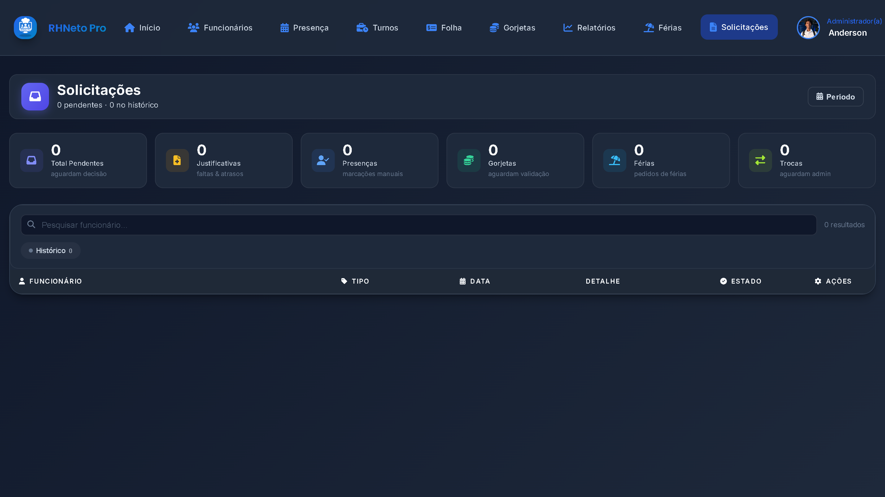
solicitacoes.png a esta pasta.Definições
Gere o teu perfil de administrador e as configurações gerais do estabelecimento.
- Edita o teu perfil (nome, foto, palavra-passe) a partir do menu no canto superior direito ou desta secção.
- Configura os horários do estabelecimento (usados para calcular turnos e presenças).
- Ajusta as configurações da folha de pagamento (valores base, regras de cálculo).
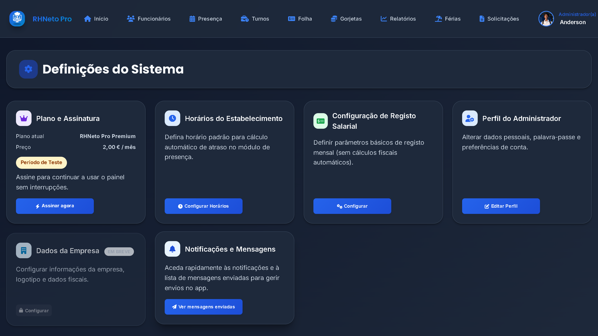
definicoes.png a esta pasta.Localização do Estabelecimento (novo)
Dentro do modal de "Configurar Horários", podes agora definir a localização GPS do estabelecimento, para confirmar se os funcionários estão mesmo no local ao marcarem presença.
- Abre a app estando fisicamente no restaurante e clica em "Usar a minha localização atual" — as coordenadas são preenchidas automaticamente a partir do teu telemóvel/PC.
- Ajusta o raio permitido (em metros) — 150m é um valor razoável para a maioria dos casos.
- Guarda. A partir daí, cada marcação de ponto de um funcionário passa a mostrar um indicador de localização em Presença.
- Esta configuração é opcional — se não a definires, as marcações continuam a funcionar normalmente, só sem o indicador de localização.
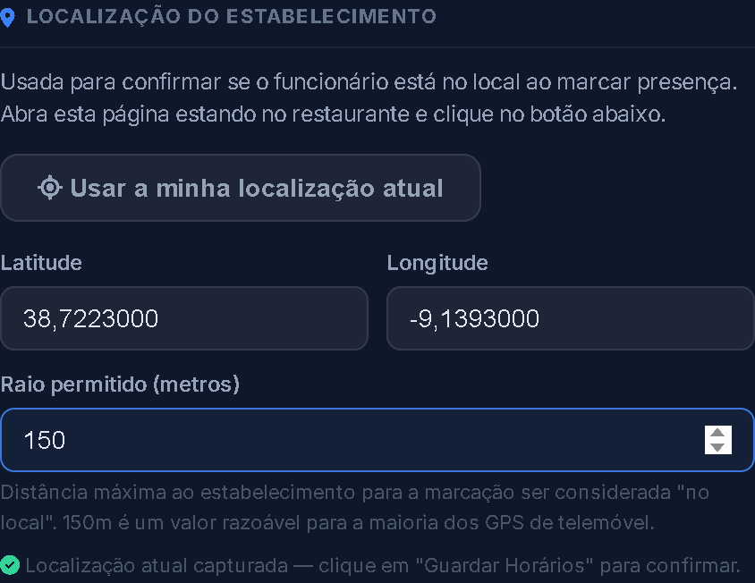
localizacao.png a esta pasta.